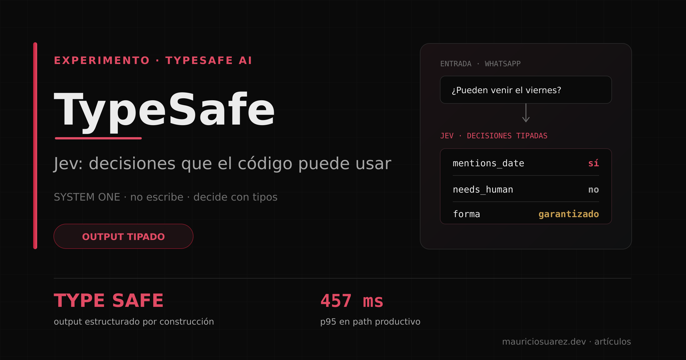
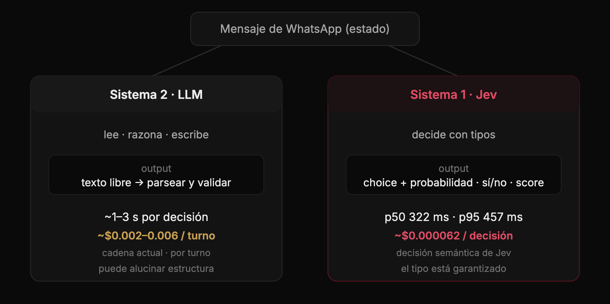
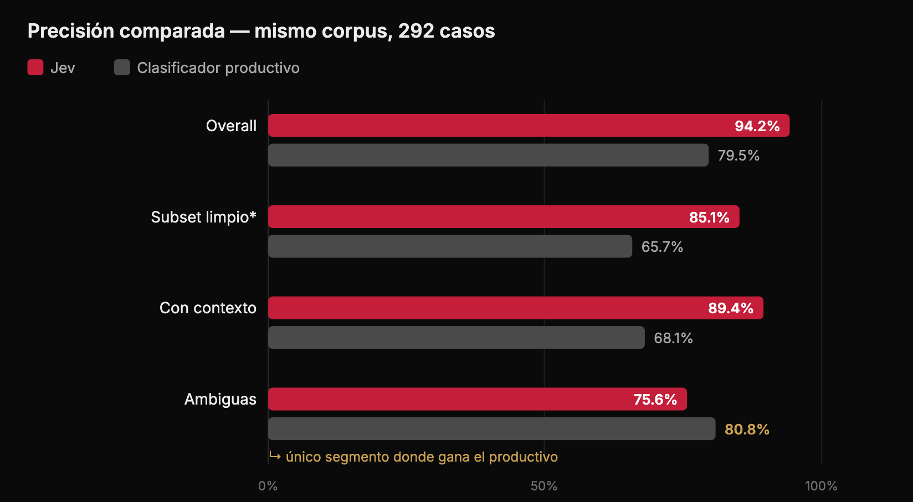
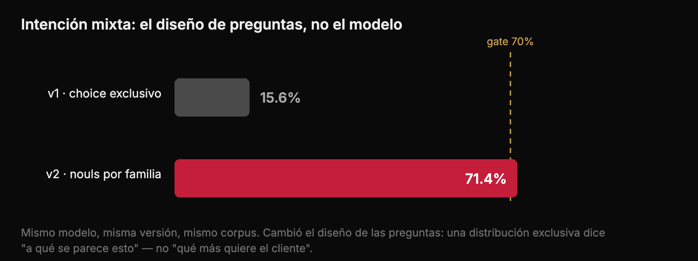

Esta semana probé un modelo de IA que no puede generar ni una palabra. Ni un "hola". Y esa es exactamente la razón por la que me interesa para producción.
Se llama Jev, es de TypeSafe AI, y es el primer exponente de una clase nueva que ellos llaman System One Models (por el Sistema 1 de Kahneman: el pensamiento rápido e intuitivo). La tesis es simple y provocadora: los LLM actuales son súper-humanos escribiendo, pero la automatización real necesita otra cosa — decisiones estructuradas que el software pueda usar directamente.
En pocas palabras: Jev no conversa ni redacta respuestas. Lee una entrada —por ejemplo, un mensaje de WhatsApp— y devuelve decisiones estructuradas que el software puede usar directamente: si es una consulta de precio, si menciona una fecha, si quiere cancelar o si necesita hablar con una persona. Es una capa rápida de clasificación tipada —los campos y valores posibles están definidos de antemano—, no un reemplazo del LLM que razona y escribe.
Jev no genera texto. Recibe un estado (un mensaje, un JSON, un contexto) y un set de preguntas tipadas, y devuelve respuestas estructuradas: una elección con su distribución de probabilidades, un puntaje sobre una rúbrica, o un sí/no con probabilidad. Todo en paralelo, en una sola llamada, sin alucinar estructura — matemáticamente no puede: el tipo está garantizado. El nombre viene de William Stanley Jevons: cada orden de magnitud que baja el costo de la inteligencia habilita órdenes de magnitud de nuevos casos de uso.

No son modelos competidores: el LLM conserva el razonamiento y la redacción; Jev resuelve decisiones estructuradas con una forma de output que el código puede consumir directamente.
Por qué le importa a una empresa de limpieza
Mi caso de prueba es real: el WhatsApp de reservas de MaltaClean — una empresa de limpieza que automatizo — lo atiende un concierge autónomo. Cada turno de conversación pasa por un clasificador contextual con 24 categorías de intención (cotización, cancelación, recibo, postulante de trabajo, pedido de humano, queja, etc.).
¿Qué mejora un modelo así acá? Nada de ciencia ficción — las tres cosas que duele en cualquier empresa de servicios:
1. Clasificar mejor a los clientes potenciales. El volumen real es de ~10 conversaciones de intención comercial por día, con un ticket promedio de €112. Cada mensaje de un lead que el bot clasifica mal o deja en unclear es una cotización que nadie contestó a tiempo. La detección de postulantes de trabajo (que hoy contaminan el pipeline de ventas) ya mide 99.7% de precisión, y "¿esto es urgente / menciona una fecha / quiere cancelar?" supera el 95%.
2. Un concierge que no se cae. El peor incidente del año no fue un error de contenido: fue cinco días sin clasificación válida (19–29 de agosto: 34% de los turnos del mes cayeron al fallback genérico porque el chain de LLM dejó de responder bien). Un modelo cuyo output es tipado por construcción ataca exactamente ese modo de falla — no puede devolver basura estructural.
3. Escalar a humanos solo cuando hace falta. Hoy el 21% de los turnos terminan en unclear y ~659 conversaciones en seis semanas fueron derivadas a una persona. Con calibración real ("necesita un humano ahora: 0.91"), el código puede ramificar con confianza: es queja Y quiere humano YA → escalar; el resto lo resuelve el bot. Y verificar cada decisión del LLM con una segunda opinión cuesta ~$0.06 al mes a este volumen.
Ojo: a este volumen el costo directo del clasificador es de $4–11 al mes — el argumento no es ahorrar plata. Es confiabilidad, precisión y calibración.
El experimento: 292 casos, gates cuantificados
Armé una evaluación offline con corpus sintético estratificado (cero datos reales de clientes): 292 casos que costaron $0.02 en total, con gates numéricos definidos antes de correr nada.
Primero, el smoke inicial que me hizo ilusiones — cinco de cinco casos perfectos:
- "¿Cuánto sale un deep cleaning antes del viernes?" → pricing (0.75) · menciona fecha: 0.98
- "Soy limpiadora con 4 años de experiencia, ¿contratan?" → recruitment_review (1.0) · es postulante: 0.98
- "Cancelá el martes, quizás vuelva a reservar" → cancel_request (1.0) · menciona fecha: 0.97
- "Hmm ok gracias" → unclear (1.0) · honestamente incierto ✓
- "Esto es inaceptable, quiero hablar con una PERSONA" → complaint (0.89) · necesita humano: 0.91
El número interesante está en la última fila: complaint 0.89 + human_request como runner-up + "necesita humano ahora" 0.91. Ninguna etiqueta única captura eso. Una respuesta generada como "el cliente está molesto" tira la información multidimensional por la borda; una distribución sobre decisiones atómicas le da a tu código exactamente lo que necesita para ramificar.
Después, la comparación pareada contra el clasificador productivo real (DeepSeek → GLM → Gemini) sobre los mismos 292 casos:
- Subset limpio (pelea pareja): Jev 85.1% vs. productivo 65.7%
- Categorías dependientes de contexto: 89.4% vs. 68.1%
- Categorías ambiguas: acá gana el productivo (80.8% vs. 75.6%)
- Acuerdo entre ambos: solo 69.9% — 50 casos donde Jev acierta y el productivo no

Prueba offline con 292 casos sintéticos, no mensajes de clientes reales. El subset limpio elimina el sesgo de contexto: el dry-run del clasificador productivo no podía pasar contexto de cliente en 117 casos del corpus completo.
La auditoría que casi no hago (y por qué era obligatoria)
Había un problema metodológico incómodo: el mismo agente había escrito las etiquetas y la rúbrica de Jev. Sesgo correlacionado garantizado. La solución estándar: un segundo anotador ciego de otra familia de modelo, viendo solo la taxonomía, sin mis etiquetas. 292 casos anotados a ciegas.
Resultado: 86.6% de acuerdo en intención, 99.7% en emoción, cero discrepancias en "¿es postulante?". Y el hallazgo incómodo: al recalcular contra la verdad del anotador independiente, la ventaja de Jev creció (86.6% vs. 72.3% = +14.3pp). Mi sesgo, si existía, era conservador.
Pero lo mejor vino con un tercer modelo como desempate ciego en las 39 disputas: la adjudicación reveló que varios "fallos" de Jev eran errores míos de etiquetado — había marcado fecha: no en mensajes que decían "Saturday" o "6pm". Corregido mi propio trabajo, la señal de fecha pasó de 80.1% a 95.5%. La lección de método: auditá tus etiquetas antes de auditar un modelo.
Del 15.6% al 71.4%: rediseñar las preguntas
La intención mixta ("quiero cancelar pero vuelve a reservar") fue el fracaso más fructífero. Primera versión: 15.6% contra un gate de 70%. La autopsia encontró la moraleja técnica del artículo entero: la distribución de una pregunta exclusiva expresa "a qué se parece esto", no "qué más quiere el cliente". Para multi-etiqueta hacen falta preguntas sí/no por familia de intención — las docs de TypeSafe lo decían explícitamente y lo ignoré porque un smoke temprano tuvo suerte.
La v2 agregó seis preguntas binarias (quiere_cancelar, quiere_reservar, mencionar_pago...) más rúbricas corregidas. Resultado: 71.4%, gate superado. Y una confesión: el gate midió 44.4% durante horas hasta que descubrí que el bug estaba en mi código de evaluación, no en el modelo — 17 casos mixtos sin familias derivables contaban como fallados por diseño. Cuando un número se ve mal, auditá tu instrumento antes de auditárselo al modelo.

El modelo no cambió: una pregunta exclusiva responde «a qué se parece esto»; las preguntas por familia permiten capturar qué más quiere el cliente.
El estado final
Último gate: latencia por el path real de producción (Worker en la red de Cloudflare → typesafe/jev vía Workers AI, el mismo serving del AI Gateway): p50 322ms, p95 457ms — la red corta a la mitad los 566–651ms de la API directa desde Europa. Paridad 12/12: exactamente el mismo modelo que evaluamos.
- Intención overall: 94.2% (chain actual: 79.5%)
- Claras / ambiguas / contexto: 95.3% / 91.0% / 89.6%
- Intención mixta multi-label: 71.4%
- Emoción ±1 nivel: 97.9%
- "¿Es postulante?": 99.7%
- Calibración: dentro de rango
- Costo por decisión: ~$0.00006
- Latencia p95 (path productivo): 457ms
Lo que no hice, también documentado: no usé datos reales de clientes — todo corrió sobre datos sintéticos —, y el 89.6% en categorías de contexto es un empate estadístico con el umbral, no una victoria. La Fase 2 — Jev clasificando en shadow junto al productivo sobre tráfico real — queda para el próximo capítulo.
Cómo se adopta (si los números aguantan)
La cascada es una propuesta, no una capacidad desplegada. Jev sólo interpreta señales: antes de responder o cambiar datos, el código debe validar permisos, estado y hechos operativos. Los casos ambiguos pasan al LLM o a una persona.
- Shadow primero: Jev clasifica en paralelo al productivo, sin efecto alguno. Se mide acuerdo, calibración y latencia sobre volumen real.
- Cascada después: Jev resuelve la masa fácil con confianza alta; lo ambiguo escala al LLM. El LLM pasa de "clasificador de todo" a "razonador de los casos difíciles".
- Verificador barato: una segunda opinión de centésimas de centavo sobre cada clasificación. Si discrepan, va a revisión humana — justo lo que atrapa los errores de routing que cuestan leads.
La tesis
No creo que esto reemplace a los LLMs. Creo que completa el stack. Tenemos modelos caros y lentos que razonan y escriben genial, y ahora la promesa de modelos baratos y calibrados que deciden rápido. La arquitectura interesante no es "uno u otro": es una cascada donde cada decisión paga lo que vale.
Lo que cambió después de 292 casos: dejé de preguntarme si esto encaja en una empresa común y corriente, y empecé a preguntar dónde exactamente.
La pregunta que me dejo — y le dejo a quien lea esto: ¿cuántas de las llamadas a LLM de tu sistema son, en realidad, preguntas de Sistema 1 que estás pagando como si fueran de Sistema 2?